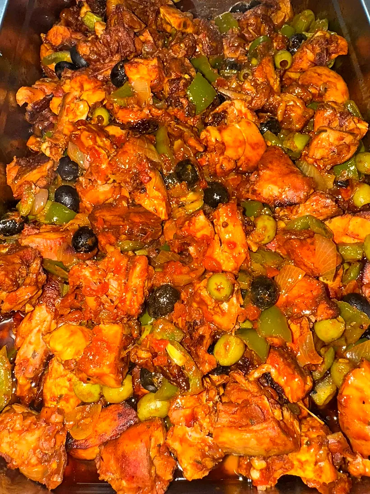
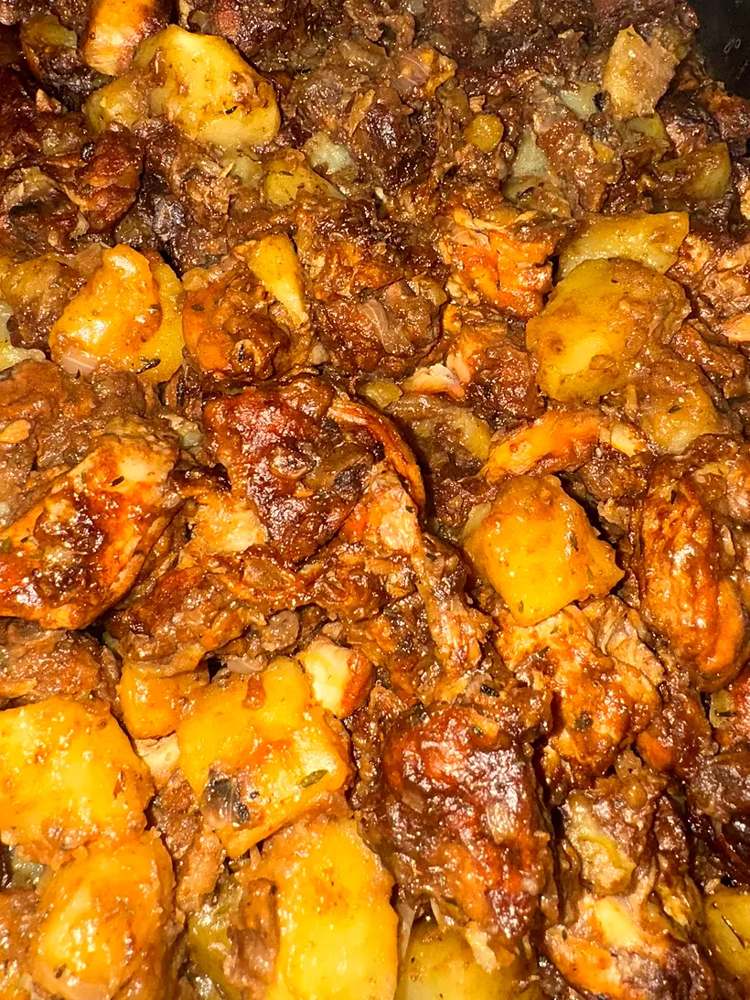
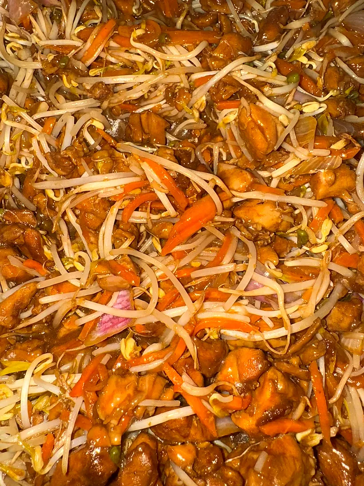
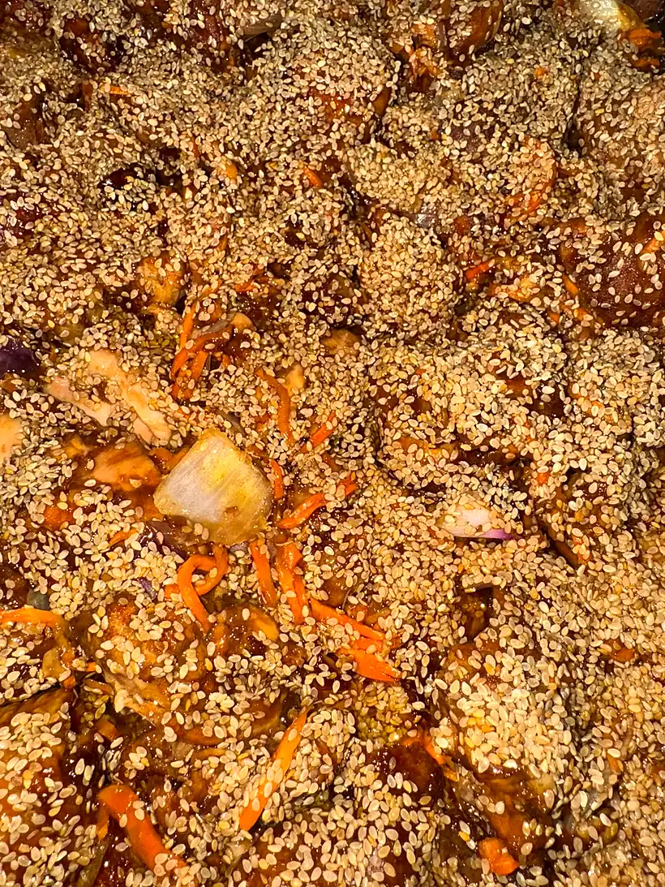
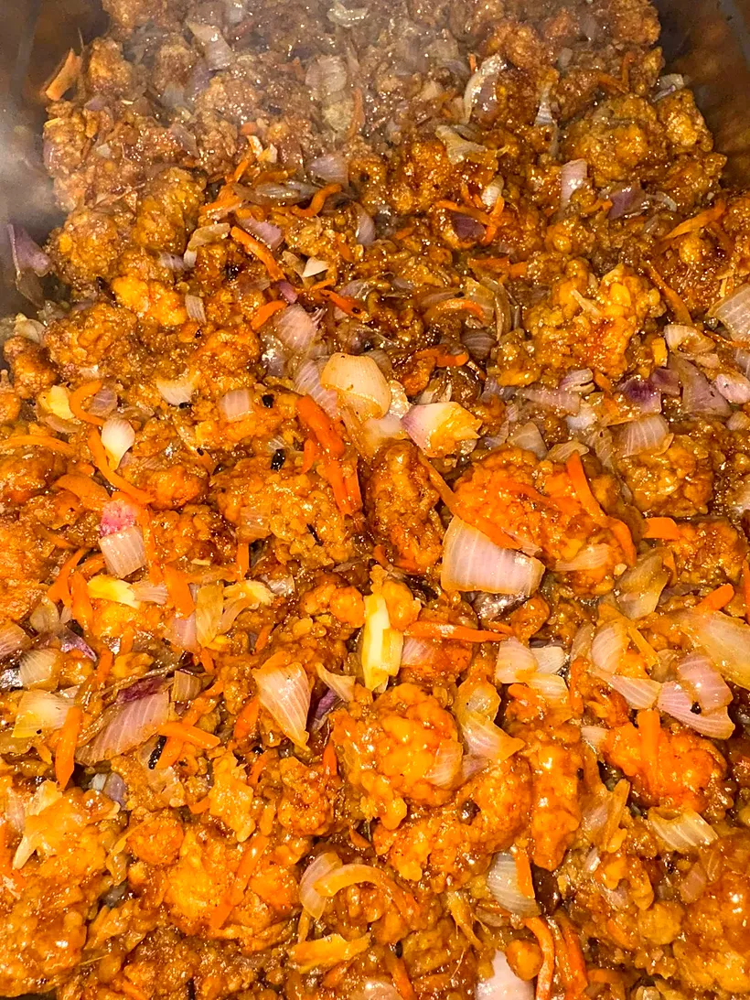
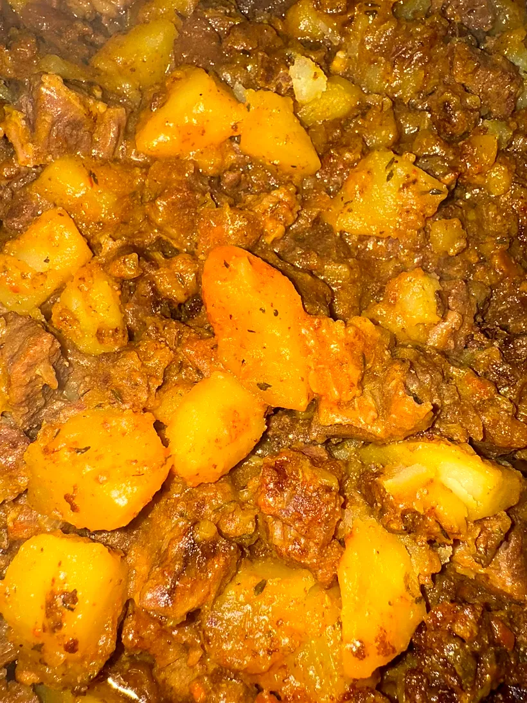
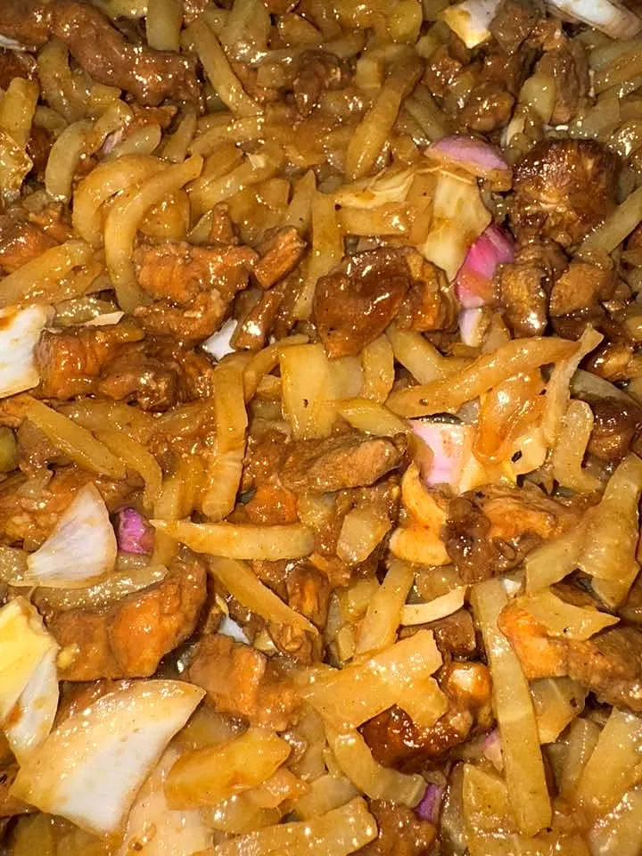
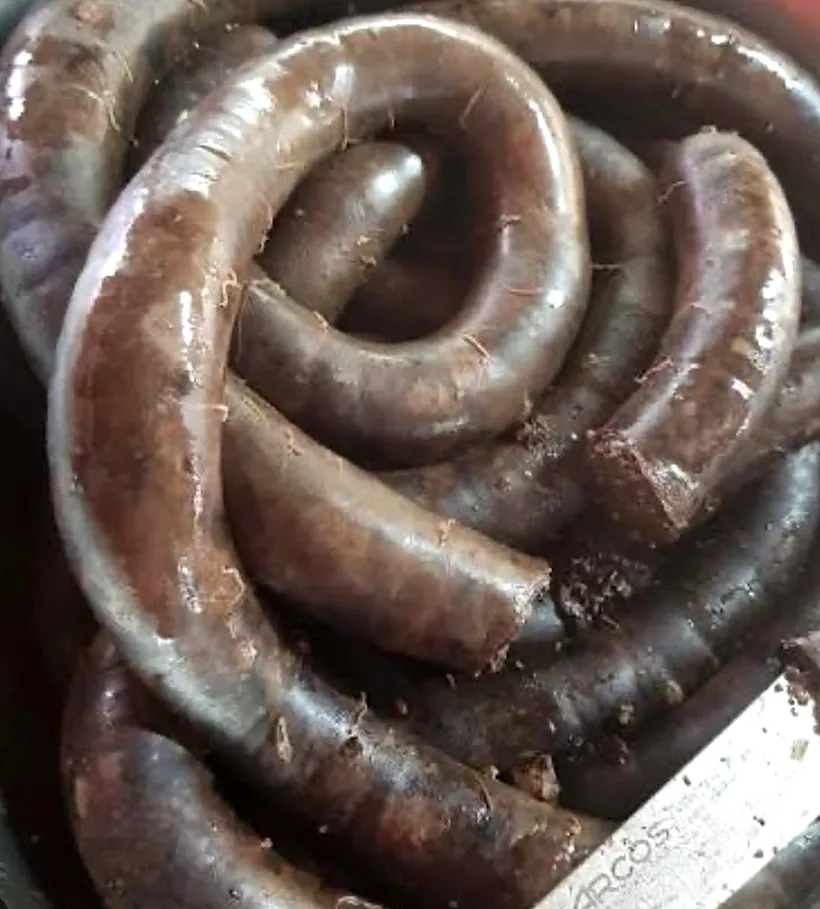
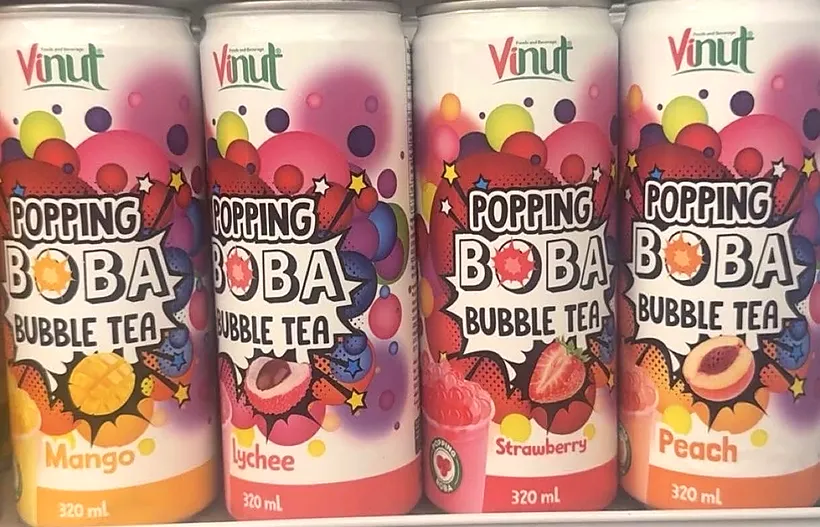

Salazie · La Réunion
BienvenueChez Garçon Kodak
Boucherie charcuterie, fruits & légumes et restauration rapide au cœur de Salazie. Chaque matin, le menu de ce midi vous attend.
95A rue Georges Pompidou, Salazie
Dans les marmites
Des plats généreux, cuisinés chaque jour
Faites glisser pour découvrir







La carte maison
Nos sandwiches
Chaque sandwich se compose avec la viande et la sauce de votre choix : crudités, paninis, américains et gratinés.
Nos crudités
Baguette, salade, tomate, œuf, sauce au choix, viande au choix
- Poulet croustillant
- Jambon
- Sarcive
- Merguez
- Poulet rôti
- Saumon
- Œuf
Nos américains
Pain blanc, viande au choix, sauce au choix, frites, fromage
- Spécial 3 viandes
- Poulet croustillant
- Jambon
- Sarcive
- Bouchon
- Merguez
- Poulet rôti
- Saumon
Nos paninis
Pain blanc, salade, tomate, viande au choix, sauce au choix, fromage
- Merguez
- Jambon
- Bouchon
- Sarcive
- Poulet croustillant
- Poulet rôti
- Saumon
Nos gratinés
Pain blanc, viande au choix, sauce au choix, fromage
- Jambon
- Merguez
- Sarcive
- Bouchon
- Poulet croustillant
- Frite
- Poulet rôti
- Saumon
Et aussi les classiques : jambon beurre, pain bouchon, bouchons, petite ou grande barquette de frites.
La boutique
Tout pour la cuisine du jour
Chez Garçon Kodak, on repart aussi avec de quoi cuisiner à la maison : boucherie charcuterie, fruits & légumes et quelques douceurs à boire.

Arrivage du 5 janvier 2026
Le boudin porc
Version pimentée ou version douce : chaque arrivage est annoncé sur la page Facebook, au bonheur des amateurs.
À la boutique
Fruits & légumes
Des produits frais pour compléter votre panier en même temps que votre plat du midi.

Publié le 6 janvier 2026
Bubble tea
Mangue, litchi, fraise, pêche : des perles fruitées pour accompagner le plat du midi.
Ils recommandent
Très bon accueil. Et plat excellents !Avis publié sur la page Facebook de Chez Garçon Kodak
Pour Noël
Les fêtes se préparent chez Garçon Kodak
Repas de famille, réveillon, grande tablée : un message WhatsApp et l'équipe vous répond pour préparer votre commande des fêtes. Vous profitez de vos proches, la cuisine se prépare ici.
Venir nous voir
Rendez-vous à Salazie
Le menu du midi, un sandwich, un arrivage : un message WhatsApp et tout est prêt.